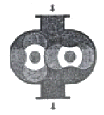
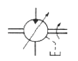
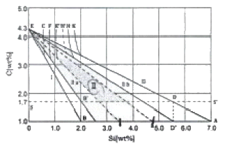
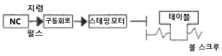
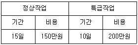

기계가공기능장 (2015-04-04 기출문제)
1과목: 임의 구분
1. 공기압축기의 종류로 볼 수 있으나 엄밀하게 압축기의 형태는 아니고 송풍기의 일종이라 볼 수 있으며, 실제로 높은 압력은 만들 수 없는, 그림과 같은 구조를 가진 것은?

- 터빈 팬
- 피스톤 팬
- 루트 블로어
- 스크루 블로어
(정답률: 78%)

2. 구조가 간단하고 값이 싸므로 차량, 건설기계, 운반기계 등에 널리 쓰이고 있는 유압펌프는 무엇인가?
- 기어 펌프
- 베인 펌프
- 피스톤 펌프
- 벌류트 펌프
(정답률: 67%)
3. 다음 유압 모터 기호의 설명으로 틀린 것은?

- 양축형이다.
- 정 용량형이다.
- 1방향 회전형이다.
- 외부 드레인이 있다.
(정답률: 81%)
4. 공기압 장치와 유압 장치를 비교할 때, 공기압 장치의 특징에 해당하지 않는 것은?
- 화재의 위험이 있다.
- 환경오염의 우려가 없다.
- 압축성 에너지라 위치 제어성이 나쁘다.
- 동력의 전달이 간단하며 먼 거리의 이송이 쉽다.
(정답률: 79%)
5. 유압 작동유의 첨가제로서 유압유의 계면 장력을 감소시키기 위하여 오일과 물속에 달라붙어 오일 속에 물 또는 물 속에 오일이 존재하도록 하는 것은?
- 방청제
- 유화제
- 산화방지제
- 점도지수 향상제
(정답률: 80%)
6. 사람의 힘에 의존하지 않고 제어장치에 의해서 자동적으로 이루어지는 제어로 자동 교환장치, 자동 교통 신호장치와 같은 제어방식은?
- 수동 제어
- 자동 제어
- 오픈 제어
- 시퀀스 제어
(정답률: 73%)
7. 다음 중 수치제어 시스템의 보수 유지에 의한 기어박스 윤활은 어떻게 관리하는 것이 가장 좋은가?
- 매 24시간 주기로 보충
- 매 60시간 주기로 교체
- 매 1개월 주기로 보충
- 매 6개월 주기로 교체
(정답률: 77%)
8. 다음 중 제어시스템의 최종 작업 목표로 분류할 수 없는 것은?
- 공정상태의 확인
- 네트워크의 기본기능
- 공정상태에 따른 자료의 분석처리
- 처리된 결과에 기초한 공정작업
(정답률: 74%)
9. 다음 중 온도센서가 갖추어야 할 특성과 거리가 먼 것은?
- 검출단에서 열 방사가 없는 것
- 피 측정체에 외란으로 작용하지 않을 것
- 열용량이 적고 소자에 열을 빨리 전달할 것
- 열 저항이 크고, 소자의 열 접촉성이 좋을 것
(정답률: 60%)
10. 자동화시스템 보수유지에서 신뢰성을 나타내는 척도와 거리가 먼 것은?
- 생산계획
- 신뢰도
- 평균고장간격시간(MTBF)
- 평균고장수리시간(MTTR)
(정답률: 87%)
11. 일반적으로 드릴의 재질로 적합하지 않는 것은?
- 합금공구강
- 고속도강
- 초경합금
- 두랄루민
(정답률: 95%)
12. 선반의 바이트 노즈 반지름(r) = 3mm, 이송속도(s) = 0.2mm/rev 일 때 최대 표면거칠기는?
- 0.00⑤
- 0.002
- 0.01
- 0.1
(정답률: 74%)
13. 선반가공에 사용되는 고정방진구의 조(jaw)는 일반적으로 원형에 몇 도 간격을 배치하여 지지하는가?
- 60°
- 90°
- 120°
- 180°
(정답률: 83%)
14. 가공물이 대형이거나 무거운 제품에 드릴가공을 할 때, 가공물은 고정시키고 드릴이 가공위치로 이동할 수 있도록 제작된 것은?
- 탁상 드릴링머신
- 레디얼 드릴링머신
- 직립 드릴링머신
- 다축 드릴링머신
(정답률: 96%)
15. 연성의 재료를 저속 절삭이나 절삭 깊이가 클 때 많이 발생하는 칩의 형태는 무엇인가?
- 전단형 칩
- 열단형 칩
- 유동형 칩
- 균열형 칩
(정답률: 95%)
16. 터릿선반을 설명한 내용으로 거리가 먼 것은?
- 공정마다 공구를 갈아 끼울 필요가 없다.
- 보통 선반보다 많은 공구를 설치할 수 있다.
- 간단한 부품의 대량 생산 시 보통 선반보다 능률이 높다.
- 공구설치시 시간이 짧게 걸리고, 작업은 숙련자만 작업할 수 있다.
(정답률: 92%)
17. 레이저가공에 대한 설명으로 틀린 것은?
- 레이저의 종류는 기체 레이저, 고체 레이저, 반도체 레이저 등이 있다.
- 레이저 광의 특징은 고감도를 유지할 수 있는 좋은 점이 있으나 지향성이 나쁘다.
- 난삭제 미세 가공에 적합하여 시계의 베어링용 보석, 다이스의 구멍 뚫기, IC 저항의 트리밍 등에 사용된다.
- 레이저의 광은 전자계의 영향도 받지 않고 진동도 필요가 없고 긴 거리를 손실 없이 전파할 수 있다.
(정답률: 65%)
18. 표면경도 및 내마모성을 높이기 위하여 선반의 베드를 주로 사용하는 표면 경화법은?
- 가스 침탄법
- 질화법
- 첨화법
- 화염 경화법
(정답률: 87%)
19. 방전가공의 전극재료에 대한 설명 중 틀린 것은?
- 구리(Cu)-텅스텐(W) : 연삭성이 나쁘고 전극 소모가 적으나 가격이 저렴하여 많이 사용한다.
- 흑연(graphite) : 방전가공속도가 빠르고 전극 소모가 적으나 취약하고 깨지는 단점이 있다.
- 황동 : 절삭성이 우수하나 전극소모가 많은 단점이 있어 관통구멍 외에는 잘 사용하지 않는다.
- 동(Cu): 고정도의 가공이 가능하며 전극소모가 적어 일반적으로 많이 사용하나 중량이 무거운 단점이 있다.
(정답률: 84%)
20. 전해연마의 일반적인 작업 특성으로 틀린 것은?
- 전기 화학적 작용으로 공작물의 미소 돌기를 용출시켜 광택면을 얻는 가공법이다.
- 가공변질층이 발생하지 않는다.
- 전해액으로 황산, 인산 등 점성이 있는 것이 사용되며 점성을 낮추기 위해 글리세린, 젤라틴 등의 유기물을 첨가 하기도 한다.
- 복잡한 형상의 제품도 가공이 가능하다.
(정답률: 80%)
2과목: 임의 구분
21. 절삭속도 140m/min, 절삭깊이 6mm, 이송 0.25mm/rev 으로 75mm 직경의 원형 단명봉을 선삭한다. 300mm의 길이만큼 1회 선삭하는데 필요한 가공 시간은?
- 약 2분
- 약 4분
- 약 4분
- 약 8분
(정답률: 91%)
22. 센터리스 연삭기의 장점에 대한 설명으로 틀린 것은?
- 연속작업을 할 수 있다.
- 긴축 재료의 연삭이 가능하다.
- 연삭 여유가 작아도 된다.
- 긴 홈이 일감을 연삭할 수 있다.
(정답률: 86%)
23. 동합금을 드릴 가공하기 위한 선단 각도로 가장 적합한 것은?
- 70~90°
- 100~120°
- 130~150°
- 160~170°
(정답률: 87%)
24. 피삭재의 재질이 연할 때, 연삭숫돌의 선정요령으로 옳은 것은?
- 거친 입도이며, 결합도가 높은 숫돌
- 거친 입도이며, 결합도가 낮은 숫돌
- 고운 입도이며, 결합도가 높은 숫돌
- 고운 입도이며, 결합도가 낮은 숫돌
(정답률: 84%)
25. 밀링가공의 단식분할법에서 분할대의 분할 크랭크를 1회전하면 주축은 약 몇도 회전하는가?
- 9°
- 18°
- 20°
- 36°
(정답률: 73%)
26. 밀링머신에서 상향절삭에 비교한 하향절삭의 특성에 대한 설명으로 틀린 것은?
- 작업시 충격이 크기 때문에 상향절삭에 비하여 기계의 높은 강성이 필요하다.
- 공구의 수명이 상향절삭에 비하여 짧다.
- 백래시를 완전히 제거해야 한다.
- 절입시 마찰력은 적으나 하향으로 큰 충격력이 작용한다.
(정답률: 85%)
27. 가공물에 바이트 날 끝 높이의 중심을 정확하게 맞추고, 양 센터 작업으로 절삭을 하였는데 심압대 축이 주축 축보다 가늘게 테이퍼를 깎여졌다. 그 원인으로 가장 가가운 것은?
- 주축대 축의 센터가 심압대 축 센터보다 높았다.
- 심압대 축의 센터가 주축대 축 센터보다 높았다.
- 양쪽 센터의 높이는 같으나 심압대 축의 센터가 작업자쪽으로 편위되어 있다.
- 양쪽 센터의 높이는 같으나 심압대 축의 센터가 작업자 반대쪽으로 편위되어 있다.
(정답률: 79%)
28. 표준 고속도강의 구성 성분비가 옳은 것은?
- W18%, Cr4%, V4
- W4%, Cr18%, V1
- W1%, Cr18%, V4
- W18%, Cr4%, V1
(정답률: 86%)
29. 절삭온도를 측정하는 방법 중 절삭부로부터, 열복사를 렌즈에 의해서 검출하여, 열전대의 온도상승을 측정하는 방법은?
- 칩의 색깔로 판정하는 방법
- 서모 컬러에 의한 방법
- 복사온도계를 사용하는 방법
- 공구속에 열전대를 삽입하는 방법
(정답률: 77%)
30. 절삭시 발생되는 절삭열이 분산되는 비율이 가장 큰 것은? (단, 가공물의 절삭속도는 140 m/min 인 경우이다.)
- 칩
- 가공물
- 절삭공구
- 공작기계
(정답률: 95%)
31. 절삭공구 재료 중 주조 경질합금의 대표적인 공구이며, 주성분이 W, Cr, Co, Fe인 것은?
- 스텔라이트
- 세라믹
- 초경합금
- 서멧
(정답률: 58%)
32. 범용선반의 정밀도 경사에 대한 설명으로 옳은 것은?
- 베트 미끄럼면의 진직도 검사는 정밀수준기를 3개소 이상 측정하여 검사한다.
- 베드 미끄럼면의 평행도 검사는 베드면 위에 다이얼 게이지를 설치하여 검사한다.
- 주축의 흔들림은 주축의 면판 등을 고정하는 부분에 블록 게이지를 이용하여 검사한다.
- 주축대와 심압대의 양 센터 높이차의 경사는 테스트바와 하이트 게이지를 이용하여 검사한다.
(정답률: 71%)
33. 표점거리 50mm, 지름 14mm인 시편을 2000N의 하중으로 인장 시험했을 때, 표점거리가 60mm에서 절단되었다면 이 시편의 인장강도는 약 몇 N/mm2 인가?
- 1.2
- 13
- 23
- 33.4
(정답률: 42%)
34. 그림은 주철에 있어서 Si와 C양에 따른 조직의 변화를 나타낸 마우러의 조직도이다. 여기서 Ⅱ영역(E′~H′ 사이 영역) 조직으로 옳은 것은?

- 백주철
- 회주철
- 페라이트 주철
- 펄라이트 주철
(정답률: 86%)
35. WC, TiC, TaC 의 탄화물 분말과 Co 결합제로 고온소결시켜 만든 공구 재료는?
- 고속도강
- 세라믹
- 초경합금
- 다이아몬드
(정답률: 85%)
36. 구리(Cu)의 성질에 해당되지 않는 것은?
- 비중이 8.96 정도이다.
- 자성체로서 전기전도율이 우수한 편이다.
- 철강에 비해 내식성이 우수하다.
- 항복강도가 낮아 상온에서 가공이 쉽다.
(정답률: 75%)
37. 알루미늄 합금 중 내열용 합금에 속하여 고온경도가 커서 내연기관의 실린더, 피스톤 등에 사용되는 것은?
- 두랄루민
- 라우탈
- 실루민
- Y합금
(정답률: 80%)
38. 다음 탄소강의 기본조직 중 공석강으로 페라이트와 시멘타이트의 증상으로 나타나는 조직은?
- 펄라이트
- 마텐자이트
- 오스테나이트
- 레데뷰라이트
(정답률: 50%)
39. 철강의 등온 변태 곡선의 만곡점 또는 곡선에서의 코(nose)와 Ms 점 사이의 적당한 온도로 유지한 염욕 또는 연욕 중에 담금질한 후 공랭하여 베이나이트 조직으로 만드는 열처리는?
- 심랭처리
- 마퀜칭
- 마텐퍼링
- 오스템퍼링
(정답률: 86%)
40. 다음 중 공기 마이크로미터의 일반적인 특징에 대한 설명으로 틀린 것은?
- 내경 측정이 용이하다.
- 높은 비율로 측정이 가능하다.
- 측정 범위가 넓어서 다품종 소량 제품의 측정에 유리하다.
- 피 측정물에 부착하고 있는 기름이나 먼지를 분출공기로 불어내기 때문에 정확한 측정이 가능하다.
(정답률: 80%)
3과목: 임의 구분
41. 미터 수나사 측정에서 삼침을 넣고 외측거리를 측정하였더니 외측측정값은 20.156mm일 때, 이 수나사의 유효지름은 약 몇 mm인가? (단, 나사의 피치는 2.000mm, 삼침의 지름은 1.1547mm이다.)
- 16.994
- 18.424
- 20.982
- 22.997
(정답률: 90%)
42. 치형오차의 측정법에 해당하지 않는 것은?
- 기초원 조절 방식
- 기초원판 방식
- 전후 기준 방식
- 연산 방식
(정답률: 69%)
43. 다음 중 오토 콜리메이터와 함께 원주눈금, 할출판, 기어의 각도 분할의 검정이사용되는 기기는?
- 평면경
- 각도 측정기
- 폴리곤 프리즘
- 요한슨식 각도게이지
(정답률: 75%)
44. 전기 촉침식 표면거칠기 측정기에서 거칠기 곡선을 얻기 위해서 어떤 필터를 사용하는가?
- 고역 필터
- 밴드 필터
- 밴드 리젝트 필터
- 저역 필터
(정답률: 71%)
45. 두 개의 구멍이 있는 공작물을 위치 결정 시키고 V홈을 가공할 때, 위치 결정구로 알맞은 것은?
- V패드와 원형핀
- 다이아몬드 핀과 패드
- 다이아몬드 핀과 원형핀
- 마멸용 패드와 원형핀
(정답률: 72%)
46. 90° V-Block에 ø60±0.04mm의 봉을 놓고 가공할 때, 치수차로 인한 공작물 수평중심의 최대 변화량은?
- 0.077
- 0.⑤7
- 0.037
- 0.017
(정답률: 46%)
47. 일반적으로 치공구제작 공차는 제품공차에 대하여 몇 %정도가 가장 적절한가?
- 2~5%
- 8~15%
- 20~50%
- 60~80%
(정답률: 73%)
48. 공작물의 수량이 적거나 정밀도가 요구되지 않는 경우 활용하며, 간단하고 단순하게 생산속도를 증가시킬 목적으로 사용하는 것은?
- 샌드위치 지그
- 채널 지그
- 탬플릿 지그
- 박스 지그
(정답률: 77%)
49. 주로 구멍 깊이 검사에 사용하며, 손끝이나 손톱 감각으로 합격과 불합격을 판정하는 한계 게이지는?
- 링 게이지
- 캘리퍼 게이지
- 필러 게이지
- 플러쉬 핀 게이지
(정답률: 84%)
50. CNC 밀링에서 동일 블록에서 함게 사용할 수 없는 G코드는?
- G02, G01
- G49, G00
- G41, G01
- G90, G54
(정답률: 95%)
51. 다음 중 공구마모에 가장 큰 영향을 미치는 절삭조건은?
- 절삭폭
- 절삭두께
- 절삭속도
- 절삭깊이
(정답률: 89%)
52. 다음 그림은 어떤 서보기구를 나타낸 것인가?

- 개방회로 제어방식
- 복합회로 제어방식
- 폐쇄회로 제어방식
- 반폐쇄회로 제어방식
(정답률: 79%)
53. 아래 지령절에서 G03의 의미는?
- 원호의 반경
- 좌표계 내의 끝점
- Z축 방향의 이송량
- 시계반대 방향의 원호보간
(정답률: 87%)
54. CAD/CAM 시스템의 출력장치에 사용되고 있는 다음 그래픽 디스플레이 중 평판형 디스플레이의 종류가 아닌 것은?
- 액정형 디스플레이
- 스토리지 디스플레이
- 플라즈마 디스플레이
- 진공 방전광 디스플레이
(정답률: 80%)
55. 200개 들이 상자가 15개 있을 때 각 상자로부터 제품을 랜덤하게 10개씩 샘플링 할 경우, 이러한 샘플링 방법을 무엇이라 하는가?
- 층별 샘플링
- 계통 샘플링
- 취락 샘플링
- 2단계 샘플링
(정답률: 81%)
56. 모든 작업을 기본동작으로 분해하고, 각 기본동작에 대하여 성질과 조건에 따라 미리 정해 놓은 시간치를 적용하여 정미시간을 산정하는 방법은?
- PTS법
- Work Sampling법
- 스톱워치법
- 실적자료법
(정답률: 84%)
57. 품질특성을 나타내는 데이터 중 계수치 데이터에 속하는 것은?
- 무게
- 길이
- 인장강도
- 부적합품률
(정답률: 85%)
58. 생산보전(PM : productive maintenance)의 내용에 속하지 않는 것은?
- 보전예방
- 안전보전
- 예방보전
- 개량보전
(정답률: 50%)
59. 어떤 공정에서 작업을 하는데 있어서 소요되는 기간과 비용이 다음 표와 같을 때 비용구배는? (단, 활동시간의 단위는 일(日)로 계산한다.)

- 50,000원
- 100,000원
- 200,000원
- 500,000원
(정답률: 84%)
60. 관리도에서 측정한 값을 차례로 타점했을 때, 점이 순차적으로 상승하거나 하강하는 것을 무엇이라 하는가?
- 연
- 주기
- 경향
- 산포
(정답률: 69%)